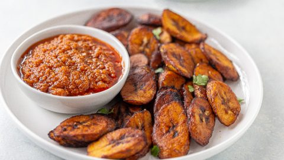

Fried Plantains

Description
Fried plantains are a traditional treat in many parts of the world. You can use ripe plantains for this recipe as over-ripe ones will soak a lot of oil and become soggy.
Ingredients
- Ripe Plantains
- Vegetable oil or Cooking oil
- Teflon-coated frying pan
- Bell Pepper
- 1 bulb of Onions
- Salt
- 1 Seasoning Cube
- Tomatoes
Steps
- Wash the plantains with water and peel them afterwards
- Get your teflon-coated frying pan, pour some cooking oil in the pan and place it on the cooker/stove.